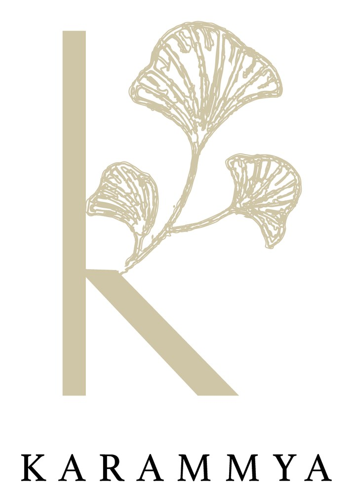
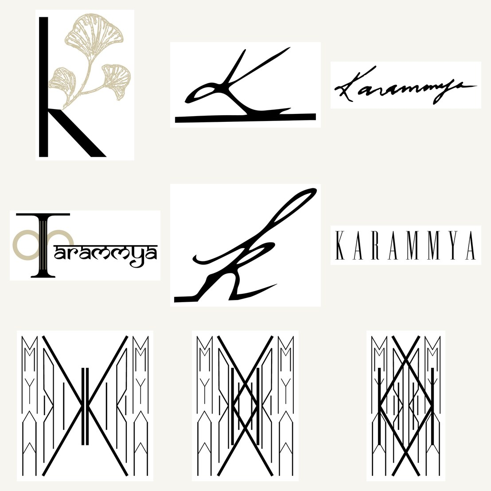
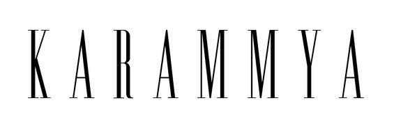

A logo identity for Karammya. The exploration spanned three temperaments — a fine-line signature, a stately Art-Deco wordmark, and a botanical "k" threaded with a gilded ginkgo — before resolving to a single, refined mark.

Karammya wanted a mark that felt personal and premium, built on the "K". Rather than guess at the register, the exploration deliberately spanned the field — from a loose hand-signature, to a strict Art-Deco wordmark, to a soft botanical monogram — so the choice could be made against real, opposite options.
The resolved mark keeps the warmth of the botanical route with the discipline of the deco one.


Pick the temperament, then refine it.
The Art-Deco route set "KARAMMYA" in a tall, letterspaced capital — architectural and formal. The botanical route paired a lighter "k" with a fanned ginkgo leaf in gold. The deco gave structure, the botanical gave warmth; the final mark borrows from both — a clean "k", a single gilded leaf, and a quiet wordmark underneath.
As with the best botanical marks, the restraint is the point: one leaf, one letter, gold on cream. It reads as considered rather than decorated — a mark that could sit on a card, a label or a storefront and feel equally at home.